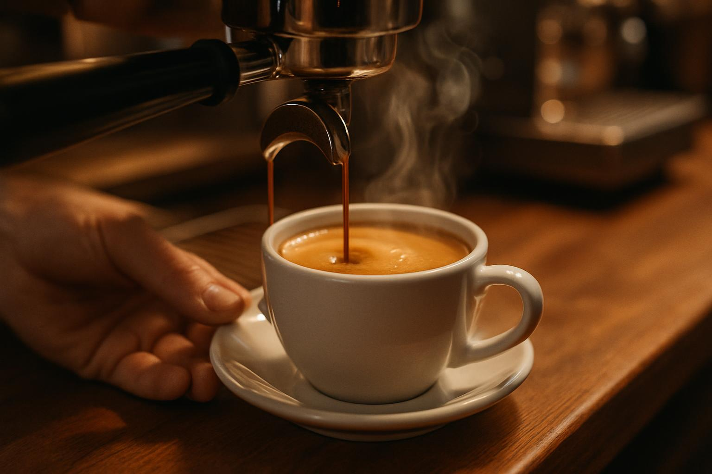

Grãos que Contam Histórias
Nossa seleção de cafés especiais é cuidadosamente curada, trazendo grãos de origens únicas do Brasil e do mundo. Cada xícara é uma viagem sensorial, preparada por baristas apaixonados que extraem o melhor de cada grão. Do coado ao espresso, uma experiência inesquecível.